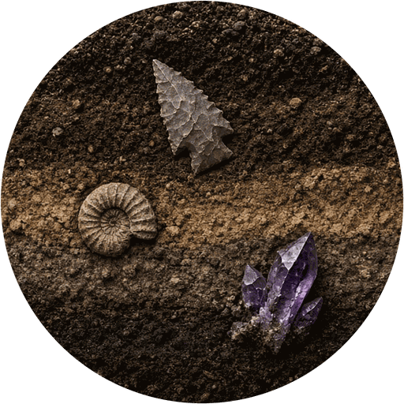
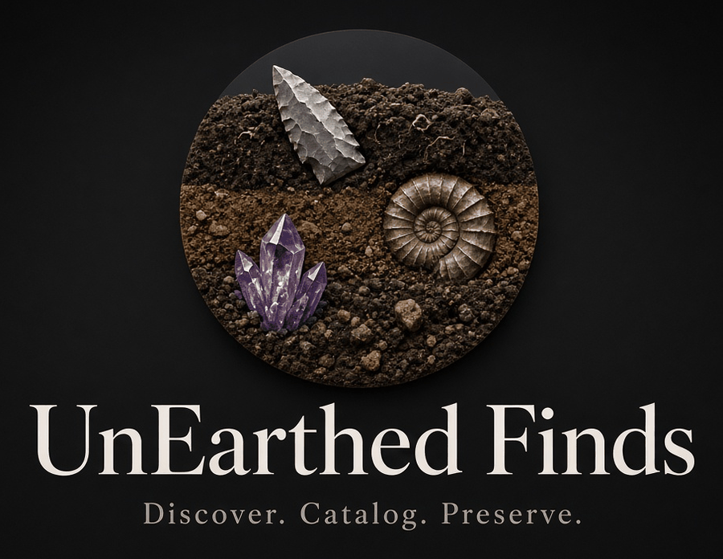

UnEarthed Finds
Discover. Catalog. Preserve.
Artifacts, fossils, rocks and minerals from anywhere in the world.
Exact find locations stay private and are never shown publicly.
Your catalog
The collection
Add a find
Deep time
13,000 years of human history
Long before people arrived, much of the collection's home region lay beneath shallow seas. These are simplified geologic periods for the rocks in this collection. Placement of fossils is a tentative hypothesis based on each record’s period guess.
A simplified outline of the cultural periods archaeologists use for the collection's home region. Dates are approximate and vary between sources. Where finds appear below, the placement is tentative: it follows each find’s top research suggestion, not a confirmed identification.
Undetermined
Finds without a period-diagnostic suggestion yet: fragments, flakes, cores and pieces still awaiting better photos or measurements.
People & land
Acknowledging the land and its people
Every find comes from land that is the ancestral homeland of Indigenous peoples. Where this collection began, that includes the Tonkawa, Coahuiltecan peoples, and others, who have lived there for more than 13,000 years; their descendants are still here today.
The objects in this catalog were made by people whose descendants are living communities. These objects are part of their heritage, not just curiosities or collectibles. We document them to learn and to keep a careful record, and we know our understanding is limited. Where we use type names and period labels, those are archaeologists’ categories, not the names or histories the makers’ descendants would necessarily use.
Learn from the source
- Tonkawa Tribe of Oklahoma official tribal website
- Texas Historical Commission state historic preservation office
- Texas Beyond History public archaeology of Texas
Our ethics
- No selling. Nothing in this catalog is for sale, and we make no value claims.
- No burial items. We do not collect or catalog human remains or burial-associated objects. If they are encountered, we stop, leave them in place, and contact the Texas Historical Commission.
- Permission only. We collect only on private land with the landowner’s permission, never on public land.
- Report significant sites. We encourage reporting significant sites to state archaeologists (the Texas Historical Commission and TARL).
- Protect locations. Exact find locations stay private so sites aren’t disturbed.
If you are a member of a descendant community and would like something in this catalog changed or removed, we welcome that conversation.
About & methods

UnEarthed Finds, the AI-Powered Catalog Tool, is a research record of surface finds from anywhere in the world: artifacts, fossils, and rocks & minerals. Each entry documents material, measurements, photos and a short list of possible identifications, so the collection can be studied, corrected and, if the owner chooses, shared with researchers.
Honest-AI principles
- Possibilities, not identifications. Suggestions are ranked options with a stated confidence level.
- Show the evidence. Each entry lists the features used and what is still missing (scale, base view, weight).
- The owner corrects the record. Hands-on observations (e.g. “stem edges chipped, not ground”) override photo-based guesses and are logged.
- Estimates are labeled. Every measurement says whether it was measured or estimated from a photo.
Disclaimers
This catalog makes no claims about authenticity or monetary value. Type names and date ranges are general references from published regional typologies and should be confirmed by qualified archaeologists.
Texas legal note
- Collect only on private land with the landowner’s permission, and record that permission.
- Collecting on public land (state or federal) is restricted or illegal.
- If you find human remains or burial-associated items, stop, leave them in place, and contact the Texas Historical Commission.
- Consider voluntarily reporting significant sites to the Texas Archeological Research Laboratory (TARL).
Model: how the AI learns
The analysis engine is deliberately simple and transparent. There is no hidden model and no data leaves your browser.
- Reference knowledge base.
data/reference/points.json,fossils.jsonandrocks.jsonlist regional point types, common Cretaceous fossils and rocks/minerals, with their traits, typical sizes, dates and look-alikes. - Scoring. Each candidate gets points for being one of your recorded possibilities, for traits found in the record’s text (negated phrases like “not ground” don’t count), and for a length in its typical range. It loses points for conflicting traits or an out-of-range size. Every score shows its reasons.
- Learning from you. When you mark a find Reviewed or use “Save as verified” in its analysis, it becomes a verified example. New finds whose features overlap a verified example of a type get a bonus, shown as “Matches N of your verified examples”. More confirmed examples mean better ranking for your collection.
- Limits. Confidence is capped at Moderate. Keyword matching can’t see the object, so photos, measurements and an expert’s eye still matter most.
Verified examples live in this browser (IndexedDB). Export them as learned-examples.json and commit to data/learned/ in the repo so every device starts from the same library.
GPS privacy summary
- Exact location is private by default and never included in the published
data/catalog.json. - Sharing levels: Private (owner only), County (county and state only), Fuzzed (~10 km area, fixed offset per site).
- Photo EXIF/GPS is stripped by re-encoding each image in the browser before storage.
- Exports leave location out unless you tick “Include private location”.
- Your additions are stored only in your browser (IndexedDB); nothing is uploaded.
Private
Find map
🔒 Only collection owners and editors can see this map. Pins come from the owner-only locations table and are never published.
Explore
Discover public finds
Browse finds that owners have made public. Locations are county / general area only. Exact find spots are never published.
⚠ Research suggestions only, not identifications. No authenticity or value claims.
QR labels
Print labels for specimen bags, trays or tags. Each QR code opens that find's public page.
Your profile
Shared editing
Collection members
Workflow
Review queue
Finds that still need your review, with the rules engine's earned confidence.
Published typology
Reference Library
Browse the published reference types the engine compares against. Filter by region, source and period. Links go to the original sources; no images are copied.
Account